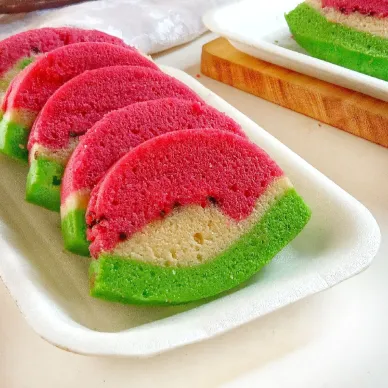

- 300 gr ikan dori filet
- 20 gr sohun kering, rendam air
- 1 jempol jahe
- 1 batang daun bawang
Bahan Saus
- 2 sdm kecap asin
- 1 sdm saus tiram
- 1 sdt gula pasir
- ¼ sdt kaldu jamur
- 150 ml air panas
Bahan Pelengkap
- Daun bawang, garnish
- Bawang putih goreng, garnish
Cara membuat
> Campurkan air panas dengan gula pasir, kecap asin, saus tiram dan kaldu jamur, aduk rata
> Siapkan piring anti panas, susun soun, potongan jahe, dan daun bawang
> Susun ikan dori di atas piring anti panas, kukus selama 7 menit
> Tambahkan saus kedalam kukusan, kukus selama 5 menit
> Sajikan.
Resep Bolu Kukus Semangka

Bolu kukus semangka yang lembut dan tanpa santan ataupun susu.
Bahan-bahan :
- 200 gram tepung terigu
- 150 gram gula pasir
- 2 butir telur ayam
- ¹/² sdt SP
- 150 ml krimer serbaguna
- 5 tetes pewarna makanan merah
- 5 tetes pewarna makanan hijau
- 2 sdm meses
langkah langkah
> Kocok telur, gula pasir, dan SP hingga putih mengembang kental berjejak.
> Masukkan tepung terigu bergantian dengan cairan krimer serbaguna, kocok rata.
> Bagi menjadi 3 bagian, beri pewarna makanan merah, hijau, dan sebagian yang sedikit biarkan tanpa diberi pewarna.
> Taburi sebagian meses pada bagian adonan merah, aduk rata.
> Oles loyang dengan sedikit minyak secara merata. Tuang adonan merah, taburi dengan sisa meses.
> Setelah itu tuang adonan putih di atasnya.
> Setelah itu tuang adonan hijau, masukkan ke dalam panci yang sudah panas, kukus selama 30 menit hingga matang dengan api kecil , angkat dan sajikan